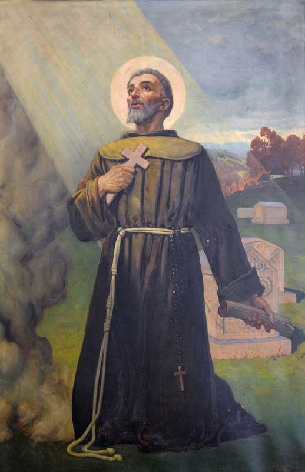
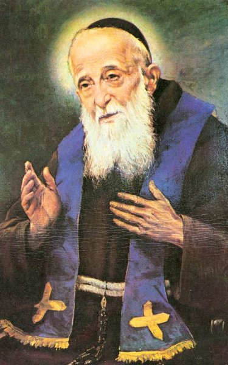
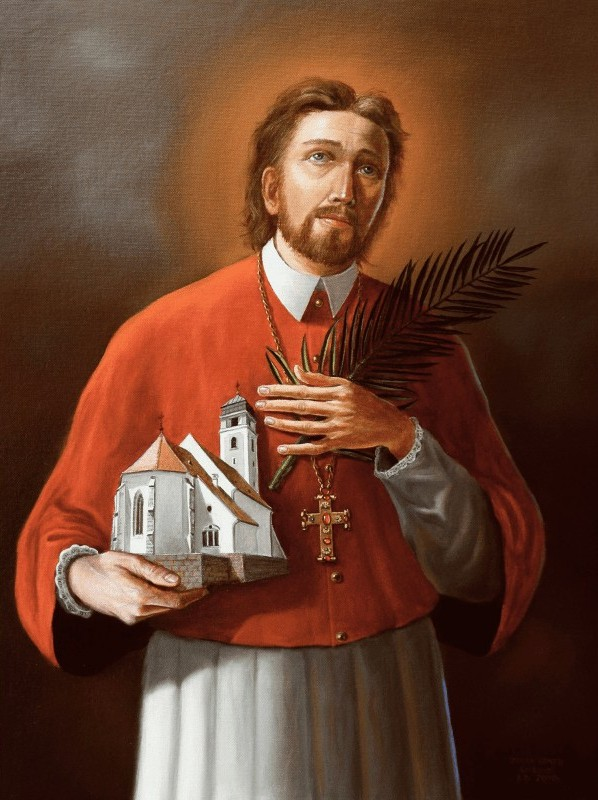

„Hoće li tko za mnom, neka se odreče samoga sebe, neka uzme svoj križ i neka ide za mnom.” (Mt 16,24)

Rođen je oko 1340. godine u Šibeniku. Kao mladić ušao je u franjevački red i postao svećenik. Najprije propovijeda bogumilima u Bosni, a zatim s trojicom subraće odlazi u Jeruzalem. U vrijeme muslimanskog blagdana Kurban Bajrama, otišli su do čuvene Omarove džamije i tamo propovijedali Evanđelje. Rasrđeni muslimani mučili su ih tri dana. 14.11.1391. su ih sasjekli, bacili na lomaču i raznijeli njihove ostatke, da kršćani njihov pepeo ne bi očuvali i častili.
Očevidac je napisao izvještaj o njihovoj mučeničkoj smrti koji se čuva u vatikanskoj biblioteci i u samostanskoj biblioteci u Šibeniku. Samo nekoliko godina poslije njihove smrti, franjevački "Šibenski brevijar" spominje Nikolu Tavelića i njegovu subraću kao svete mučenike. Krajem 19. stoljeća šibenski biskup Antun Josip Fosko pokrenuo je postupak za beatifikaciju Nikole Tavelića.
Papa Pavao VI. proglasio ga je svetim 1970. godine, čime je postao prvi hrvatski svetac.

Leopold Bogdan Mandić rođen je u Herceg Novom kao Bogdan Ivan, u obitelji podrijetlom iz okolice Omiša. Oduševljen životom kapucina, sa 16 godina odlazi u Italiju na školovanje. Ulaskom u novicijat uzima ime Leopold, a za svećenika je ređen u Veneciji.
Iako krhka zdravlja i visok svega 135 cm, postao je jedan od najvećih ispovjednika u povijesti Crkve. Najveći dio života proveo je u Padovi, gdje je u svojoj maloj ispovjedaonici svakodnevno provodio i po deset sati, mireći ljude s Bogom. Zbog svoje nevjerojatne strpljivosti, mudrosti i blagosti prema grešnicima, prozvan je "Prijateljem ljudi". Posebno je težio kršćanskom jedinstvu, moleći za povratak istoka u katoličko krilo.
Umro je u Padovi 1942. godine, a na njegovu je sprovodu bilo nevjerojatnih 170.000 ljudi. Papa Ivan Pavao II. proglasio ga je svetim 1983. godine, čime je postao drugi službeni hrvatski svetac. Njegov blagdan slavi se 12. svibnja.

Marko Stjepan Krizin rođen je u Križevcima. Školovao se u Grazu i Rimu (kolegij Germanicum et Hungaricum), gdje se istaknuo bistrinom i krepošću. Nakon ređenja vraća se u domovinu, no ubrzo odlazi u Trnavu kao ravnatelj sjemeništa i kanonik, a potom postaje upravitelj opatije kod Košica.
U Košicama, tadašnjem središtu kalvinizma, Marko je djelovao s dvojicom isusovaca, Stjepanom Pongraczem i Melhiorom Grodzieckim. Zbog uspješnog jačanja katolicizma, kalvinska vojska ih u rujnu 1619. godine zarobljava. Unatoč obećanjima o crkvenim imanjima u zamjenu za prelazak na kalvinizam, Marko ostaje nepokolebljiv u katoličkoj vjeri.
Nakon brutalnog mučenja, Marko Križevčanin pogubljen je 7. rujna 1619. godine. Tijela mučenika danas počivaju u Trnavi. Papu Pio X. proglasio ih je blaženima 1905., a sveti Ivan Pavao II. svetima 1995. godine. Sveti Marko je zaštitnik Križevaca, matične županije te nekoliko biskupija, a u čast mu je podignuta i župna crkva u Zagrebu koju je blagoslovio Alojzije Stepinac.